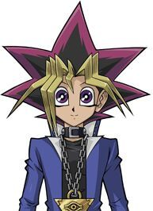

Sinopse:
O jovem estudante do ensino médio Yugi Muto derrota
o campeão mundial, Seto Kaiba, em um duelo de cartas com a
misteriosa ajuda do quebra-cabeça Millenium. Em razão de sua
vitória inesperada, Yugi se torna famoso em todo o mundo e
passa a participar de outros duelos para salvar os amigos e a família.
Autor: Kazuki Takahashi
Editores: Shueisha, Konami
Adaptações: Yu-Gi-Oh!-O Filme(2004), Yu-Gi-Oh! The Dark Side of Dimensions(2016), Yu-Gi-Oh!Vinculos nalém do tempo(2010)
Gêneros: Gêneros: Ficção de aventura, Fantasia, Ficção científica
| Yu-Gi-Oh! | Episódios |
| Yu-Gi-Oh! Duel Monsters | |
| Yu-Gi-Oh! GX | |
| Yu-Gi-Oh! 5DS | |
| Yu-Gi-Oh! Zexal | |
| Yu-Gi-Oh! ARC V | |
| Yu-Gi-Oh! Vrains |
